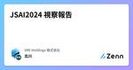

SRE Holdings 株式会社のフィード
https://zenn.dev/p/sre_holdings
SRE Holdings株式会社の情報発信用ブログです
フィード

JSAI2024 視察報告
SRE Holdings 株式会社のフィード
はじめにSREホールディングス株式会社のデータサイエンティスト、北川です。先々月、JSAI2024が開催されました。今回は弊社の北川が現地視察してきましたので、会場および展示ブースの様子をご紹介します。 JSAI概要 開催概要JSAIは、1年に1度国内の人工知能（AI）研究者が集う場であり、情報収集、情報発信、ネットワーク形成、採用・就職活動が行われます。画像などの特定の分野に限らず、幅広い分野の発表があります。 会期場所：アクトシティ浜松日程：2024年5月28日(火)〜31日(金) 会場の様子JSAIには多くのセッションがあり、今回は30日と...
8日前

EC2環境でのDVC導入と最小権限IAMロールの設定方法
SRE Holdings 株式会社のフィード
SREホールディングス株式会社でエンジニアをしています天海です。機械学習では、データやモデルを変えて実験することが多く、過去の実験データを同じストレージ内に様々なファイル名で保存することがあります。このような方法を取ると、管理するファイル数が増加し、実験結果などのファイル管理が困難になることがあります。そこで、データ管理ツールであるData Version Control（DVC）を分析環境に導入することを検討しました。分析環境はEC2上に構築することが多いのですが、最小限のアクセス権であるIAMロールを付与した環境を構築したいため、DVCを実際に動作させながら、データ管理に必要な最...
2ヶ月前
FastAPIでコールバックをdef(同期関数)で定義したときの挙動を確かめてみた
SRE Holdings 株式会社のフィード
こんにちは。SREホールディングス株式会社で新卒2年目エンジニアをやっております田城です。業務でFastAPIを使っていて、各エンドポイントのコールバック定義ってasyncをつけて良いんだっけ？良くないんだっけ？みたいな話になりました。結局、非同期の処理にはasyncをつけて、そうでない処理にはつけないほうが良い、となりました。しかし、実際つけないとどういう動作をするんだっけ？同時動作数を制限する方法はあるのか？というのが気になったので、実際に色々なライブラリのソースコードを読んでどういう実装になっているのかを追いました。 対象読者FastAPIのコールバックを asyn...
2ヶ月前
React Form HookとYupを使って、validationとstate管理を楽にする
SRE Holdings 株式会社のフィード
はじめにSREホールディングス株式会社にて、ソフトウェアエンジニアをやっております、叶です。今回はフロントエンド(React)のライブラリreact-form-hook yup 組み合わせて使うことによって、画面のvalidationとstate管理を楽にする方法を紹介いたします。 対象読者Reactを用いて、フォーム開発を楽にしたい方 使用したライブラリ(React)react-form-hook(7.49.3): フォームを管理するライブラリです。yup(1.2.0): Jason Quense氏が開発している、バリデーションのためのライブラリです。...
6ヶ月前
polarsはpandasよりはやい？
SRE Holdings 株式会社のフィード
こんにちは。SREホールディングス株式会社データサイエンティストの岡林です。データ分析、機械学習の前処理では通常pandasを使用していますが、データ数が増えてくると処理時間が気になることがあります。少し前から話題になっているpolarsを使用すると、pandasよりも速く処理ができそうなので、実際に試してみます。 TL;DRpolarsはpandasより、概ね数倍〜十倍程度速いデータのread/writeはcsvよりも、parquetを使用した方が速いライブラリの成熟度、安定性の面ではpandasが有利用途やシーンによって使い分けるのが良い。 動作環境M...
8ヶ月前
進行中のプロジェクトを引き継いだらやるべきことと心構え
SRE Holdings 株式会社のフィード
SREホールディングス株式会社でプロジェクトマネージャ（PM)を努めている鍋谷です。様々な事情でPMが交代することになった進行中のプロジェクト。そのプロジェクトにあなたが後任のPMとして就任することになったとき、あなたはどうしますか？この記事では、筆者の経験に基づいて、進行中プロジェクトの後任PMの立場になったとき、どういう心構えで何をしたらよいのかをお伝えできればと思います。 対象読者・進行中のプロジェクトの後任PMになった人・プロジェクトの引継ぎに関心がある人・プロジェクトマネジメントのスキルを向上させたい人 前任PMから業務を引継ぐ最初にすることは、前任のP...
8ヶ月前
Docker内部の仕組みについて手を動かして理解してみた
SRE Holdings 株式会社のフィード
SREホールディングス株式会社 でソフトウェアエンジニアをやっている釜田です。近年、Webアプリケーション開発者にとって、コンテナの起動や停止のためにDockerコマンドを用いることが一般的になりましたが、その背後の仕組みについてご存知でしょうか？実は、コンソールからDockerコマンドを実行した裏側で、コンテナランタイムがコンテナの作成や起動を行っています。今回はそのようなDockerの裏側について紹介するとともにコンテナランタイムを直接動かしてコンテナを作成、起動してみようと思います。今回紹介するコンテナランタイムの役割と機能についての理解を深めることで、今後より適切なコンテ...
10ヶ月前
やさしいクリーンアーキテクチャ
SRE Holdings 株式会社のフィード
SREホールディングス株式会社の松本です。プロダクトはリリースしてからが始まりで開発し続けることが当たり前の時代、ソフトウェアは変更や拡張に強く設計しなければなりません。クリーンアーキテクチャはそんな設計を実現する方法の1つですが、名前は聞いたことはあるけど実践したことはない、なんだか複雑で難しそう、という印象を持っている人が多いのではないでしょうか。クリーンアーキテクチャを詳細に説明している記事は数多くありますので、本記事ではクリーンアーキテクチャを触ったことがない方に良さが伝わるように、やさしく噛み砕いて説明してみようと思います。 対象読者クリーンアーキテクチャをこれから...
10ヶ月前
ChatGPTのプロンプトを英訳すると、どのくらいのコスト削減になるか？ → トークン数は半分くらいになる？そしてコストは…
SRE Holdings 株式会社のフィード
SREホールディングス株式会社エンジニアの木下です。ChatGPTで日本語を処理する際のコスト削減に向けた工夫のひとつにプロンプトの英訳（英語訳/日本語を英語に翻訳）があります。本記事では、プロンプトを英訳すると、どの程度のコスト削減になりそうか、実例を用いて見てみたいと思います。 対象読者コストを抑えたChatGPT利用を考えているかた トークン数はtiktokenというライブラリで調べられるトークン数はtiktokenというライブラリを用いて調べることができます。https://github.com/openai/tiktoken利用したいモデルで使われているエンコ...
1年前
Pythonによるスプレッドシートへの書込みとGASイベントの変更
SRE Holdings 株式会社のフィード
SREホールディングスでエンジニアをしています鎮目です。今回は、すでに業務で利用しているスプレットシートに対しCSVを取り込んで書き換えを行うといった作業があったため、初歩的な内容ではありますが、そのなかで行った作業を紹介致します。 前提スプレットシートがすでに業務で利用されているスプレットシートにGoogle Apps Script(以下GAS)のonEditイベントが設定されており、書き換えを行った際もそのイベントの実行が必要作業時間が限られているため、GASのイベント内容をスプレッドシートの書き換えを行っているプログラムに移行ができないスプレッドシートの書き換えはP...
1年前
スマホで撮影した写真をOCRで文字起こしし、音声データに変換して再生する方法
SRE Holdings 株式会社のフィード
はじめにSREホールディングス株式会社にて、ソフトウェアエンジニアをやっております、叶です。入社から色々なAI技術に触れる機会がありました。今回は、開発で携わったAI-OCR技術を用いた簡単なアプリを作ってみました。スマホのカメラで写真を撮って、写真に含まれるもテキストを文字起こして、音声データに変換して読み上げるというアプリです。 使用した技術フロント(React)react：Javascriptのエコシステムフレームワークreact-webcam: デバイスのカメラを操作し、撮影した画像データを取得するライブラリバックエンド(python)fl...
1年前
クリティカルシンキングの紹介と実践
SRE Holdings 株式会社のフィード
SREホールディングス株式会社にて、ソフトウェアエンジニアをやっております、宮内です。本稿では、読んだその日の会議からすぐに試せる、「議論をより創造的なものにする方法」の１つであるクリティカルシンキングを紹介します。 対象とする読者本稿は組織活動をする方々を広く対象にしています。その中で特に、議論を取りしきるであろう方々を対象としています。 クリティカルシンキングとはクリティカルシンキング(批判的思考)[1]とは、哲学などの分野で語られる、議論における考え方の1つです。クリティカルシンキングは、さまざまな定義が提唱されていますが、本稿では、「自他の意見問わず、意見はひとしく...
1年前
テクニカルライティングのすすめ
SRE Holdings 株式会社のフィード
こんにちは。SREホールディングス株式会社のエンジニアの高柳です。エンジニアと言いつつもドキュメントを書くことって多いですよね。設計書や仕様書はもとより、提案書や報告書なんかのドキュメンテーション業務もざらにあるかと思います。今回は、「ドキュメント作ってもめっちゃ不毛な添削ばかり😢」「ドキュメント書くの苦手なんだよなぁ」といった方に向けて…それ、テクニカルライティングでちょっとだけ改善されるかもしれません。 テクニカルライティング？テクニカルライティングとは、技術的な内容を目的や読み手に合わせて分かりやすく伝える手法です。製品の取扱説明書や論文、ホワイトペーパーなどの技...
1年前
地理情報をPythonで扱う
SRE Holdings 株式会社のフィード
SREホールディングス株式会社でデータサイエンティストをしている岡林です。当社ではAI査定をはじめとする不動産系のプロダクト、AIの開発を行っています。不動産情報を扱うにあたって、切っても切り離せないのがGIS（地理情報システム）です。今回は国土交通省の国土数値情報で公開されているデータを使用して、PythonでGISを扱う手順についてご紹介します。 前提使用するライブラリとバージョンPython 3.11.0geopandas 0.12.2fiona 1.8.22shapely 2.0.1folium 0.14.0numpy 1.24.2※fiona...
1年前
ローカルマシン上のWebアプリケーションにモバイル端末から名前解決してアクセスする
SRE Holdings 株式会社のフィード
ローカルマシン上のWebアプリケーションにモバイル端末から名前解決してアクセスするSREホールディングス株式会社システムディレクターの津田(啓)です。今回はローカルマシンで実行しているWebアプリケーションに同一LAN上のモバイル端末から名前解決しつつアクセスする方法についてご紹介します。 対象読者Web開発関係者ローカルマシンのWebアプリケーションに同一LAN上の別端末から名前解決しつつアクセスしたい人 環境MacOS Monterey 12.5 (Apple M2)Homebrew: 3.6.12Docker: 20.10.17-rd, build...
2年前
AI・人工知能 EXPO秋 視察報告
SRE Holdings 株式会社のフィード
はじめにSREホールディングス株式会社の恒松です。 先日、AI・人工知能 EXPO秋が開催されました。今回は弊社の西野と恒松が現地視察してきましたので、会場の様子や興味のあった展示について紹介します。[1] 開催概要日本最大！ AIに特化した専門展！ディープラーニング、機械学習、エッジAI、自然言語処理、画像・音声認識、対話AIなど AIに関するサービスが一堂に出展。DXを推進するために、あらゆる分野の方々が来場し、活発な商談が行われています。https://www.nextech-week.jp/autumn/ja-jp/about.html 会場の様子私は...
2年前
Hugging Faceのtransformersライブラリで日本語QAタスクを試す
SRE Holdings 株式会社のフィード
はじめにSREホールディングス株式会社エンジニアの木下です。データサイエンス専門チームでなくてもAIモデルを試してみるような場合に簡単に利用できるHugging Faceのtransformersライブラリを使って、日本語QAタスクを試した例をご紹介します。Hugging Faceのサイトでタスクと言語から試してみたいモデルを探し、手元の環境でモデルとトークナイザを指定するだけで準備は完了です。サンプルとして、不動産サイトのテキスト情報をコンテキストとして与えて物件価格や駅距離が答えられるか試してみます。 対象読者transformersライブラリを使ったことがなく、ざ...
2年前
CEATEC 2022 視察報告
SRE Holdings 株式会社のフィード
はじめにSREホールディングス株式会社のデータサイエンティストの天海です。先日、CEATEC 2022が開催されました。今年度は、3年ぶりの会場での開催およびオンライン開催のハイブリッド開催となりました。今回は弊社の天海と岡林が現地視察してきましたので、会場および展示ブースの様子を紹介します。 CEATEC概要 開催趣旨経済発展と社会課題の解決を両立する「Society 5.0」の実現を目指し、あらゆる産業・業種の人と技術・情報が集い、「共創」によって未来を描く。 会期幕張メッセ会場： 2022年10月18日（火）〜21日（金）午前10時～午後5時オンライ...
2年前
MLflowで画像認識案件の実験管理を効率化する
SRE Holdings 株式会社のフィード
こんにちは。SREホールディングス株式会社の西野です。主に画像認識案件のPLを担当しています。本日は画像認識チームにおいて実験管理目的で採用したMLflowについてご紹介いたします。 背景弊社では不動産に限らず、様々な業界・分野におけるAIの社会実装を推進しており、最近では画像認識案件にも注力するようになっています。そのような中、私はPLという立場で複数のアルゴリズムエンジニアと連携しながら複数のプロジェクトを推進していくわけですが、その中で課題感としてあったのが実験管理の効率化です。クライアントに報告したこの精度結果って、どの学習済みモデルでしたっけ？そのときのハイ...
2年前
App Runnerを使ってSpringBootのコンテナ環境を爆速で用意する
SRE Holdings 株式会社のフィード
SREホールディングス株式会社 でサーバーサイド兼インフラエンジニアをやっている釜田です。弊社では、インフラ環境でECS、FargateといったAWSのコンテナサービスを利用しているのですが、インフラ経験のないサーバーサイドエンジニアの方にとって、CI/CDを含めたコンテナ環境の構築は少しハードルが高いです。そこで今回は、コンテナイメージを用意するだけでAWS上にCI/CDを含めたコンテナ環境を用意してくれるAWSのマネージドサービスApp Runnerについて紹介します。 対象読者CI/CDを含めたコンテナ環境を構築するハードルを高く感じている方コンテナ環境でのアプリ開発...
2年前